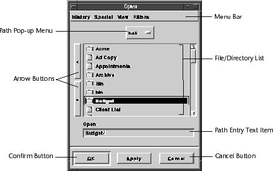

File Chooser
The file chooser provides a common interface to the user for choosing files and traversing directories. A file chooser can be created and used by any Galaxy application and is the recommended method for requesting a file or directory from the user. File choosers can be customized by the application program to provide filtering and custom sorting methods, can show more than one directory at a time, allow easy traversal through the file system, and provide pathname completion through a text item.
A file chooser always displays its current directory (every file chooser has its own current directory). The current directory can be changed by the user or changed programmatically via SetDirectory and SetFile.
Native File Choosers
Some platforms provide native versions of a file chooser; whenever possible, Galaxy tries to use this native dialog. To prevent Galaxy from using the native chooser, SetNativePreferred with FALSE before opening the file chooser. If your application intends to support native file choosers, do the following to ensure that the native chooser reflects as many of the vfilechsr settings as possible:
- Use vfilechsrPlace, not vwindowPlace to position the file chooser's window on the screen.
- Do not directly attach filter menus to the file chooser's menubar. Use one or more of the following functions to specify how the file chooser should filter its file lists:
- AddFilterByPattern
AddFilterByProc
AddFilterBySystemType
- Use SetPromptName to change the label associated with the path entry text item.
- For put type choosers, use SetDocumentName to change the default text displayed in the path entry text item.
- Use SetOptions to enable the read-only checkbox, specify whether a named file already exists (useful for get types), and whether to confirm overwrites (useful for put types).
- Use vfilechsrProcess, not vconfirmProcess to open a blocking file chooser. (A blocking file chooser will not return until the user dismisses the chooser.)
- Postpone opening document windows in your apply hook. Most native file choosers are system-modal windows¯opening a non-modal window on top of the file chooser is inappropriate.
Because it's impossible for Galaxy to determine what kind of changes a subclass makes to the standard definition of a chooser, file chooser subclasses are never automatically mapped to native dialogs. That is why member functions are provided to set global or static member functions as the apply and/or filter functions for the chooser. This allows you to provide callbacks without subclassing. To allow Galaxy to use the native file chooser, call SetOverridePreferNative with TRUE.
Component Overview
The following illustration shows a file chooser for importing an icon. The various components of the file chooser are labeled and described on the following pages (see Figure 34).
Figure 34. A file chooser

NOTE: The components available in the file chooser is platform dependent. Your
file chooser may differ from the one depicted in Figure 34.
Menu Bar
The file chooser's menu bar contains the History, Special, and View Menus. The History menu contains a list of recently visited directories and marked directories. The directories in the top of the History Menu are those recently visited by the user. When the maximum number of directories is exceeded, the oldest directory is removed from the bottom and the newest is inserted at the top of the menu. Marked directories are directories marked by using the Mark Directory command in the Special Menu. They are always retained at the bottom of the History Menu. Selecting a directory in the History Menu changes the file chooser's current directory to that directory.
The Special Menu contains a Home Menu item and a Mark Directory menu item. The Home menu item changes the current directory to the user's home directory. (Note the actual definition of the "home" directory is platform-specific.) The Mark Directory menu item permanently places the current directory into the marked directory list, which can be accessed through the History Menu.
The View Menu contains a list of various view by methods, which affect the way the file/directory list is sorted. The file/directory list can be viewed by any of the methods listed in the View Menu by selecting the appropriate menu item. The application program can also add view by methods of its own. The application can insert additional menu items within this menu that are application dependent.
- NOTE: You cannot remove any built-in menus from the menu bar of the Galaxy file
chooser.
Path Pop-up Menu
The path pop-up menu lets you quickly change the current directory to any directory within the current path. When this menu is popped up the current path is split into individual menu items. Selecting any menu item causes the current directory to change to the selected directory immediately.
File/Directory List
The file list contains a list of all the files and directories in the current directory. A small icon is displayed before each file/directory name indicating a file or directory. The file/directory name is displayed in italics if the file/directory is a link or alias. The file/directory entry is disabled if the file/directory is not readable (for get choosers) or not writable (for put choosers). At the discretion of the application, either single or multiple file/directory selection is permitted. The user can traverse through the file system by double-clicking on directories and can choose a file by double- clicking on the file. A file can also be chosen by selecting the file (single click) and pressing the confirm button.
More than one directory can be displayed at one time. By resizing the file chooser (making it wider), you can increase the number of file/directory lists displayed. The file chooser's current directory is always displayed in the leftmost file/directory list. When a directory is selected from the leftmost file/directory list, the contents of the selected directory are displayed in the file/directory list immediately to the right. This applies when selecting a directory for any file/directory list.
If the user is typing a file name while the file/directory list is focused, the closest match is always highlighted. Whenever a file or directory name is highlighted, pressing the confirm button always chooses the highlighted file.
The application can also filter from the current directory files and directories that should not be displayed in the file list. If an application can only load certain types of files, it can choose to display only the file type it can load.
Arrow Buttons
The two arrow buttons let you quickly change the current directory to the directory immediately above or below the current directory. The left arrow button makes the parent of the current directory the new current directory, and the right arrow button makes the directory selected in the leftmost file/directory list the new current directory.
Path Entry Text Item
The path entry text item lets you type in the path to the file or directory to be chosen. This can be a full or relative pathname and is always based on the file chooser's current directory. The path entry text item does not affect the selection in any file/directory list. Pressing the confirm button always chooses the file specified in the path entry text item, unless there are multiple files selected in a file/directory list. The path entry text item is a based on a standard text item, and all key assignment for text items apply here as well.
File name completion is also available via the path entry text item. At any point, the user can press the file name completion character, and the file chooser completes the file name if possible. If it is not possible, the chooser beeps. If the file name cannot be uniquely completed, the chooser completes the name until the first ambiguous character and then beeps.
The application can choose to alter the file name entered on a save/write operation. If an application is saving a file format that usually contains a standard suffix or something similar, the application can modify the file name.
Confirm Button
Pressing the confirm button (usually labeled OK or Apply) requests that action take place on the specified files or specified directory. This is almost always the file or directory specified in the path entry text item, unless more than one file is selected in a file/directory list. If the latter is the case, the application program is notified that all selected files have been chosen; otherwise, the application program is notified that the file/directory specified in the path entry has been chosen. The OK confirm button closes the file chooser after notifying the application, while the Apply confirm button notifies the application but does not close the file chooser.
Cancel Button
The cancel button closes the file chooser without requesting a file. This button does not appear in the OPEN LOOK look-and-feel since the pushpin accomplishes this purpose. The abandon key (by default, Escape) also closes the dialog.
Optional Application Items
The file chooser can also contain extra dialog items anywhere in the dialog. These are usually settings or check boxes indicating additional file filtering criteria or a selection of formats for saving files. Optional items are application dependent and will not be included in native choosers.
Get and Put File Choosers
The file chooser has two types of behavior: get and put.Get type file choosers assume the application is reading or getting a file or directory to use in some fashion; usually the file or directory already exists. For example, an application can use a get type chooser as part of an "Open Document" command implementation. On the other hand, put type file choosers assume the application is writing or putting information to new or already existing files (hence overwriting the current version). For example, an application can use a put type chooser as part of a "Save Document" command implementation.
There are subtle visual and behavioral differences between the two chooser types. Get type file choosers for example, disable entries in file/directory lists when the user does not have read access privileges, while put type file choosers disable entries in file/directory lists when the user does not have write access privileges.
Creating and Implementing File Choosers
From an application development standpoint, the file chooser is created using vfilechsrCreate. The file chooser handles all operationsthe application need only provide an apply notification function (this is the function that is called when the user has chosen files or a directory). However, the application can customize the file chooser in many ways; it can for instance, provide platform independent file type filtering, specify automatic filename extensions for user selections, or restrict the user selection to only directories.
After creating the file chooser, the application should associate either put or get type behavior with the chooser. By default, a new file chooser behaves as a get type chooser. Setting the file chooser type is done with SetType.
When using a put type file chooser, a default file or directory name is usually supplied with SetDocumentName. This name is displayed in the file chooser's path entry text item when the chooser is opened. If the chooser is already open, the text item is changed to reflect the new name.
The last action required of the application is the setting of the apply notification function SetApply. The apply function is passed two parameters: a pointer to the file chooser and a path of the file or directory chosen.
The application's apply notification function can perform any file and/or directory validation it needs. If the apply notification function decides the file is inappropriate, it should raise an alert (or some other means of user-notification) and return FALSE. This tells the file chooser that the chosen item was unacceptable, and the chooser will not close; otherwise, the file chooser if free to close after a successful call to the apply notification function .
An optional (though common) feature of file choosers is filtering to affect what is displayed in the file/directory lists. Such filtering only indirectly affects what is sent to the application's apply notification function . If for example, the user enters the name of filtered file in the path entry text item, that file name will be sent to the apply notification function when the user selects a confirm button. So, regardless of any associated filtering mechanisms, always perform appropriate validation in the apply notification function before accepting the user's choice. There are two ways to associate filtering with a file chooser: using one of the predefined "AddFilterBy" functions, or subclassing and overriding the vfilechsrFILTER method.
The filters (as specified in AddFilterByProc) are called with two parameters: a path to the directory being displayed, and the file chooser entry to be filtered. The filter method is called with two parameters, a pointer to the file chooser and the file chooser entry to be filtered. The filter functions can use the information contained in the file chooser entry (accessed via vfilechsrGetEntry*) along with the current file chooser directory to determine if the specified file/directory entry should be included in a file/directory list. If the entry should be included, return TRUE; otherwise, return FALSE.
The other two filters AddFilterByPattern and AddFilterBySystemType filter file chooser entries based on a vregExp pattern and file system specific file typing respectively. Refer to the File Chooser of the Galaxy Application Environment Reference Manual for further information.
Using the File Chooser
This section contains sample code that will help you get started using the file chooser.
Example 69 shows the minimum steps for using a file chooser. Assume the function GetAndOpenFile is called when the user requests a file.
Example 69. Using a "Get" type file chooser
static int OpenFile(vfilechsr *fileChooser, vfsPath *path)
{
/* Normally do something here */
return vTRUE;
}
void GetAndOpenFile(vdialog *dialog)
{
vfilechsr *fileChooser;
/* Create and initialize apply hook function */
fileChooser= vfilechsrCreate();
vfilechsrSetType(fileChooser, vfilechsrGET);
vfilechsrSetApply(fileChooser, OpenFile);
/* Open and wait until user dismisses */
(void)vfilechsrProcess(fileChooser);
/* Destroy the file chooser object */
vfilechsrDestroy(fileChooser);
}
In Example 70, the get file chooser's apply hook function OpenFile is extended to include simple file verification and user-feedback in the event of an unacceptable selection.
Example 70. File verification inside the file chooser's apply hook
Example 71 shows the minimum steps for using a directories-only file chooser. Assume the function GetStorageDirectory is issued when the user requests a directory.
Example 71. Using a directory-only "Get" type file chooser
Example 72. Customizing a file chooser
static int OpenFileWithException (vfilechsr *fileChooser,
vfsPath *path)
{
int volatile canClose = vFALSE;
vfsFile *volatile file = NULL;
vexWITH_HANDLING
{
/*
* Open and process file (directory never passed
* to non-directory file choosers)
*/
if ((canClose = vfsAccess(path, vfsFILE_EXISTS)))
{
file = vfsOpenFile(path, vfsOPEN_READ_ONLY);
ReadDocument(file); /* elsewhere... */
vfsCloseFile(file);
}
else
vexGenerateAbandon();
}
vexON_EXCEPTION
{
vnotice *notice;
/*
* Tell the user something went wrong
*/
vdebugBE(vexDumpChain(vdebugGetWarningStream()));
notice = vnoticeCreate();
vnoticeSetTextScribed
(notice, vcharScribeLiteral("Cannot Open File."));
(void)vnoticeProcess(notice);
vnoticeDestroy(notice);
/*
* Cleanup the file if we have opened it but failed later
*/
if (file!=NULL)
vfsCloseFile(file);
/*
* Do not close the chooser to give user other chance
* to pick another file
*/
canClose = vFALSE;
vexClear();
}
vexEND_HANDLING
return canClose;
}
This notification function first verifies that the given path actually refers to an existing file, and then tries to open and read that file. If the file is successfully read, the function returns TRUE to the file chooser. If however, the file cannot be read, the application raises an alert informing the user the file was not opened and returns FALSE./* Convenience for this sample */
#define SCRIBE(l) vcharScribeLiteral(l)
/* Where we store our temp directory information */
static vfsPath *volatile tempDirectory = NULL;
/* Copy the user's selection into the global variable */
static int RememberDirectory(vfilechsr *dirChooser,
vfsPath *path)
{
int canClose = vTRUE;
/* Make sure we have the correct access to the directory */
if (!vfsAccess(path, vfsCAN_READ|vfsCAN_WRITE))
{
vnotice *notice = vnoticeCreate();
vnoticeSetTextScribed(notice,
SCRIBE("Cannot access directory."));
(void)vnoticeProcess(notice);
vnoticeDestroy(notice);
canClose = vFALSE;
}
else
{
if (tempDirectory)
vfsDestroyPath(tempDirectory);
tempDirectory = vfsClonePath(path);
}
return canClose;
}
/*
* Let the user select a directory to store our temporary
* data files... */
static void GetStorageDirectory(void)
{
register vfilechsr *dirChooser;
/* Create chooser, setup our apply callback */
dirChooser = vfilechsrCreate();
vfilechsrSetType(dirChooser, vfilechsrGET);
vfilechsrSetApply(dirChooser, RememberDirectory);
/* Make sure the we are choosing only directories */
vfilechsrSetOptions(dirChooser,
vfilechsrOPTION_ONLY_DIRS |
vfilechsrOPTION_HIDE_HIDDEN);
/* Center on main display; process until dismissed */
vfilechsrPlace(dirChooser, NULL, vrectPLACE_CENTER,
vrectPLACE_CENTER);
(void)vfilechsrProcess(dirChooser);
/* Cleanup */
vfilechsrDestroy(dirChooser);
}
Example 72 modifies the GetAndOpenFile in Example 69 to include the following customizations:
To add the first two customizations, add the following code after setting the file chooser's type. vfilechsrSetSelection(fileChooser, vfilechsrMULTIPLE);
vfilechsrSetDirectory(fileChooser, vfsGetHomeDirPath());
To perform platform independent file filtering, we use the AddFilterBySystemType method and select the predefined "All Types" and "Resource" file filters. const vname *resName = vnameInternGlobalLiteral("Resource");
/* Add two filters: "All Files" and "Resource Files" */
vfilechsrAddFilterBySystemType(fileChooser, vresourceNULL,
vname_Default, NULL);
vfilechsrAddFilterBySystemType(fileChooser, vresourceNULL,
resName, resName);
Sample Code
Complete source code demonstrating some of the concepts presented in this chapter is available in your Galaxy distribution in the samples/docsamps directory. The file_chooser2 sample shows how to create a "get" File Chooser that filters the file selection for the user. When the File Chooser opens, it blocks until the user makes a selection from the chooser.
Table of Contents
Help Map
Need help? Contact Visix.